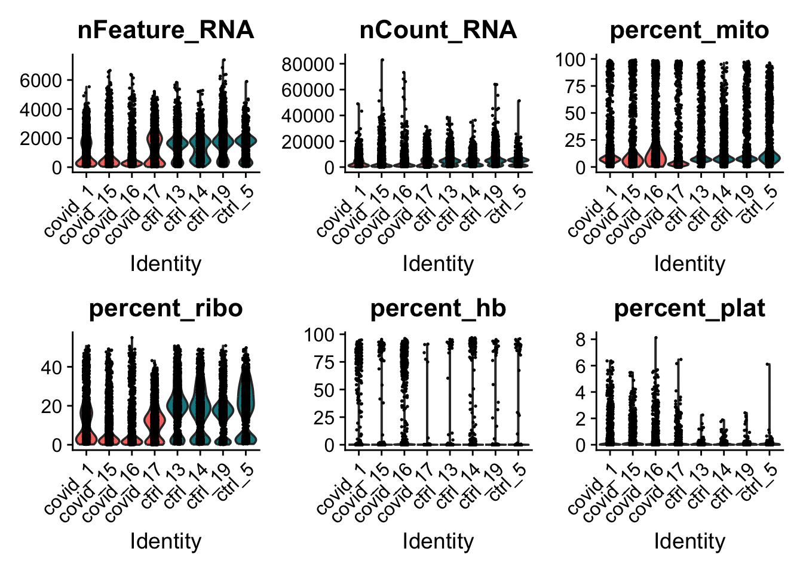
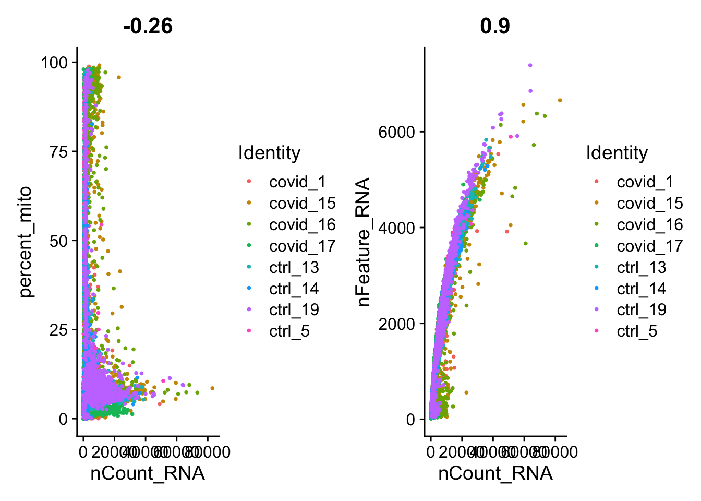
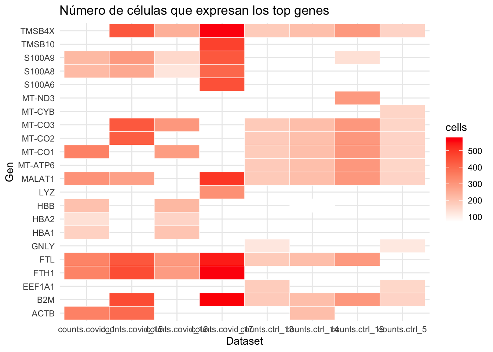
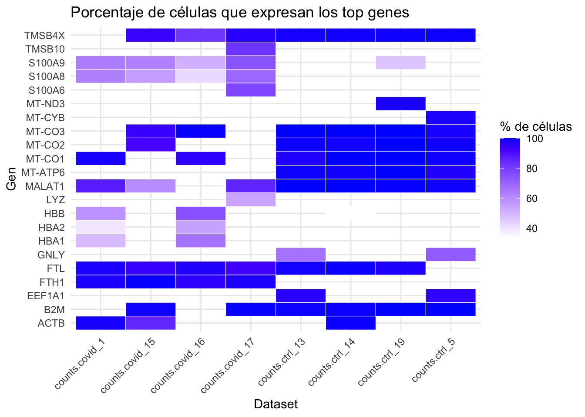

library(Matrix) # install.packages("Matrix")
library(hdf5r) # install.packages("hdf5r")
library(rhdf5) # BiocManager::install("rhdf5")
library(dplyr)
library(ggplot2)
library(patchwork)
library(DoubletFinder) # remotes::install_github('chris-mcginnis-ucsf/DoubletFinder', force = TRUE)
library(Seurat) ## paquete principal de este capítuloPráctica 1: COVID-19 vs healhty
Control de calidad y normalización de los datos
Descripción de los datos
Información general
- Título del estudio: Immunophenotyping of COVID-19 and Influenza Underscores the Association of Type I IFN Response in Severe COVID-19
- Especie: Homo sapiens
- Número de acceso de la base de datos GEO (Gene Expression Omnibus): GSE149689
- Tipo de experimento: scRNA-seq
Antecedentes:
Aunque la mayoría de los individuos infectados con SARS-CoV-2 presentan COVID-19 leve, algunos pacientes desarrollan COVID-19 grave, acompañado de síndrome de dificultad respiratoria aguda e inflamación sistémica. Para identificar los factores que impulsan la progresión severa de la enfermedad, realizamos secuenciación de RNA de célula única (single-cell RNA-seq) utilizando células mononucleares de sangre periférica (PBMCs) obtenidas de donadores sanos, pacientes con COVID-19 leve o grave, y pacientes con influenza grave.
Resultados del artículo:
Los pacientes con COVID-19 mostraron firmas hiper-inflamatorias en todos los tipos celulares de las PBMCs, particularmente una regulación al alza de la respuesta inflamatoria mediada por TNF/IL-1β en comparación con la influenza grave. En los monocitos clásicos de pacientes con COVID-19 grave, la respuesta de interferón tipo I coexistió con la inflamación impulsada por TNF/IL-1β, lo cual no se observó en pacientes con infección leve. Con base en esto, proponemos que la respuesta de interferón tipo I exacerba la inflamación en pacientes con infección grave por COVID-19.
Artículo relacionado: Lee JS, Park S, Jeong HW, Ahn JY et al. Immunophenotyping of COVID-19 and influenza highlights the role of type I interferons in development of severe COVID-19. Sci Immunol 2020 Jul 10;5(49). PMID: 32651212
Diseño experimental
Este estudio se realizó con secuenciación de RNA de célula única (scRNA-seq) en células mononucleares de sangre periférica (PBMCs) de tres grupos:
- 5 pacientes con influenza grave
- 11 pacientes con COVID-19 (con distintos grados de severidad)
- 4 controles sanos
Este diseño permitió comparar directamente las respuestas inmunitarias entre influenza y COVID-19, así como distinguir qué características estaban asociadas con la progresión hacia formas graves de COVID-19.
Paso 1. Cargar paquetes y datasets en R
Cargar paquetes
Descargar los datasets desde GEO
Archivos que estamos descargando del estudio GSE149689:
GSE149689_series_matrix.txt.gz- Contiene la matriz de expresión génica resumida.
- Es un archivo tabular donde cada fila corresponde a un gen y cada columna a una muestra.
- Útil para análisis rápidos sin necesidad de reconstruir todo el objeto de secuenciación.
GSE149689_barcodes.tsv.gz- Lista de códigos de barras celulares.
- Cada código identifica una célula individual en el experimento de scRNA-seq.
- Permite distinguir las lecturas de cada célula.
GSE149689_features.tsv.gz- Contiene la lista de genes (features) analizados.
- Incluye identificadores como el nombre del gen y, a veces, anotaciones adicionales.
- Se usa para mapear las filas de la matriz de conteos.
GSE149689_matrix.mtx.gz- Es la matriz de conteos cruda en formato Matrix Market.
- Representa cuántas veces se detectó cada gen en cada célula.
- Este archivo, junto con barcodes y features, forma el conjunto completo para reconstruir el objeto de análisis en herramientas como Seurat.
# Nombre de la carpeta
dest_dir <- "fullData"
# Si la carpeta existe, eliminarla primero
if (dir.exists(dest_dir)) {
unlink(dest_dir, recursive = TRUE)
message("Carpeta eliminada: ", dest_dir)
}
# Crear la carpeta nuevamente
dir.create(dest_dir)
message("Carpeta creada: ", dest_dir)
# Definir carpeta destino
if (!dir.exists(dest_dir)) dir.create(dest_dir)
# Aumentar el tiempo de espera a 10 minutos (600 segundos)
options(timeout = 600)
# Lista de URLs a descargar
urls <- c(
"ftp://ftp.ncbi.nlm.nih.gov/geo/series/GSE149nnn/GSE149689/matrix/GSE149689_series_matrix.txt.gz",
"ftp://ftp.ncbi.nlm.nih.gov/geo/series/GSE149nnn/GSE149689/suppl/GSE149689_barcodes.tsv.gz",
"ftp://ftp.ncbi.nlm.nih.gov/geo/series/GSE149nnn/GSE149689/suppl/GSE149689_features.tsv.gz",
"ftp://ftp.ncbi.nlm.nih.gov/geo/series/GSE149nnn/GSE149689/suppl/GSE149689_matrix.mtx.gz"
)
# Descargar cada archivo
for (url in urls) {
dest_file <- file.path(dest_dir, basename(url))
if (!file.exists(dest_file)) {
message("Descargando: ", basename(url))
download.file(url, destfile = dest_file, mode = "wb")
} else {
message("Ya existe: ", basename(url))
}
}Importar matriz de conteos en R
# Leer la matriz de conteos
sm <- as(Matrix::readMM("fullData/GSE149689_matrix.mtx.gz"), Class = "dgCMatrix")'as(<dgTMatrix>, "dgCMatrix")' is deprecated.
Use 'as(., "CsparseMatrix")' instead.
See help("Deprecated") and help("Matrix-deprecated").# Leer nombres de genes y células
genes <- as.character(read.delim("fullData/GSE149689_features.tsv.gz", header = FALSE)[,2])
cells <- as.character(read.delim("fullData/GSE149689_barcodes.tsv.gz", header = FALSE)[,1])
# Asignar nombres
rownames(sm) <- genes
colnames(sm) <- cells
# agregar en el slot
sm@Dimnames <- list(genes, cells)Importar la metadata en R
# Leer metadatos de la serie
meta <- read.delim("fullData/GSE149689_series_matrix.txt.gz",
skip = 55, # saltar las líneas iniciales de cabecera.
header = TRUE, # Que la celda tenga ese nombre en la columna
fill = TRUE) # rellena filas cortas con NA para que todas tengan el mismo número de columnas.
#
t(meta[c(7,8,9,10,11,12),]) 7
X.Sample_title "!Sample_source_name_ch1"
Sample.1_nCoV.1.scRNA.seq..SW103. "nCoV_PBMC"
Sample.2_nCoV.2.scRNA.seq..SW104. "nCoV_PBMC"
Sample.3_Flu.1.scRNA.seq..SW105. "Flu_PBMC"
Sample.4_Flu.2.scRNA.seq..SW106. "Flu_PBMC"
Sample.5_Normal.1.scRNA.seq..SW107. "Normal_PBMC"
Sample.6_Flu.3.scRNA.seq..SW108. "Flu_PBMC"
Sample.7_Flu.4.scRNA.seq..SW109. "Flu_PBMC"
Sample.8_Flu.5.scRNA.seq..SW110. "Flu_PBMC"
Sample.9_nCoV.3.scRNA.seq..SW111. "nCoV_PBMC"
Sample.10_nCoV.4.scRNA.seq..SW112. "nCoV_PBMC"
Sample.11_nCoV.5.scRNA.seq..SW113. "nCoV_PBMC"
Sample.12_nCoV.6.scRNA.seq..SW114. "nCoV_PBMC"
Sample.13_Normal.2.scRNA.seq..SW115. "Normal_PBMC"
Sample.14_Normal.3.scRNA.seq..SW116. "Normal_PBMC"
Sample.15_nCoV.7.scRNA.seq..SW117. "nCoV_PBMC"
Sample.16_nCoV.8.scRNA.seq..SW118. "nCoV_PBMC"
Sample.17_nCoV.9.scRNA.seq..SW119. "nCoV_PBMC"
Sample.18_nCoV.10.scRNA.seq..SW120. "nCoV_PBMC"
Sample.19_Normal.4.scRNA.seq..SW121. "Normal_PBMC"
Sample.20_nCoV.11.scRNA.seq..SW122. "nCoV_PBMC"
8
X.Sample_title "!Sample_organism_ch1"
Sample.1_nCoV.1.scRNA.seq..SW103. "Homo sapiens"
Sample.2_nCoV.2.scRNA.seq..SW104. "Homo sapiens"
Sample.3_Flu.1.scRNA.seq..SW105. "Homo sapiens"
Sample.4_Flu.2.scRNA.seq..SW106. "Homo sapiens"
Sample.5_Normal.1.scRNA.seq..SW107. "Homo sapiens"
Sample.6_Flu.3.scRNA.seq..SW108. "Homo sapiens"
Sample.7_Flu.4.scRNA.seq..SW109. "Homo sapiens"
Sample.8_Flu.5.scRNA.seq..SW110. "Homo sapiens"
Sample.9_nCoV.3.scRNA.seq..SW111. "Homo sapiens"
Sample.10_nCoV.4.scRNA.seq..SW112. "Homo sapiens"
Sample.11_nCoV.5.scRNA.seq..SW113. "Homo sapiens"
Sample.12_nCoV.6.scRNA.seq..SW114. "Homo sapiens"
Sample.13_Normal.2.scRNA.seq..SW115. "Homo sapiens"
Sample.14_Normal.3.scRNA.seq..SW116. "Homo sapiens"
Sample.15_nCoV.7.scRNA.seq..SW117. "Homo sapiens"
Sample.16_nCoV.8.scRNA.seq..SW118. "Homo sapiens"
Sample.17_nCoV.9.scRNA.seq..SW119. "Homo sapiens"
Sample.18_nCoV.10.scRNA.seq..SW120. "Homo sapiens"
Sample.19_Normal.4.scRNA.seq..SW121. "Homo sapiens"
Sample.20_nCoV.11.scRNA.seq..SW122. "Homo sapiens"
9
X.Sample_title "!Sample_characteristics_ch1"
Sample.1_nCoV.1.scRNA.seq..SW103. "subject group: COVID-19 patient"
Sample.2_nCoV.2.scRNA.seq..SW104. "subject group: COVID-19 patient"
Sample.3_Flu.1.scRNA.seq..SW105. "subject group: Influenza patient"
Sample.4_Flu.2.scRNA.seq..SW106. "subject group: Influenza patient"
Sample.5_Normal.1.scRNA.seq..SW107. "subject group: healthy control"
Sample.6_Flu.3.scRNA.seq..SW108. "subject group: Influenza patient"
Sample.7_Flu.4.scRNA.seq..SW109. "subject group: Influenza patient"
Sample.8_Flu.5.scRNA.seq..SW110. "subject group: Influenza patient"
Sample.9_nCoV.3.scRNA.seq..SW111. "subject group: COVID-19 patient"
Sample.10_nCoV.4.scRNA.seq..SW112. "subject group: COVID-19 patient"
Sample.11_nCoV.5.scRNA.seq..SW113. "subject group: COVID-19 patient"
Sample.12_nCoV.6.scRNA.seq..SW114. "subject group: COVID-19 patient"
Sample.13_Normal.2.scRNA.seq..SW115. "subject group: healthy control"
Sample.14_Normal.3.scRNA.seq..SW116. "subject group: healthy control"
Sample.15_nCoV.7.scRNA.seq..SW117. "subject group: COVID-19 patient"
Sample.16_nCoV.8.scRNA.seq..SW118. "subject group: COVID-19 patient"
Sample.17_nCoV.9.scRNA.seq..SW119. "subject group: COVID-19 patient"
Sample.18_nCoV.10.scRNA.seq..SW120. "subject group: COVID-19 patient"
Sample.19_Normal.4.scRNA.seq..SW121. "subject group: healthy control"
Sample.20_nCoV.11.scRNA.seq..SW122. "subject group: COVID-19 patient"
10
X.Sample_title "!Sample_characteristics_ch1"
Sample.1_nCoV.1.scRNA.seq..SW103. "subject status: severe COVID-19 patient"
Sample.2_nCoV.2.scRNA.seq..SW104. "subject status: mild COVID-19 patient"
Sample.3_Flu.1.scRNA.seq..SW105. "age: 68"
Sample.4_Flu.2.scRNA.seq..SW106. "age: 75"
Sample.5_Normal.1.scRNA.seq..SW107. "age: 63"
Sample.6_Flu.3.scRNA.seq..SW108. "age: 70"
Sample.7_Flu.4.scRNA.seq..SW109. "age: 56"
Sample.8_Flu.5.scRNA.seq..SW110. "age: 78"
Sample.9_nCoV.3.scRNA.seq..SW111. "subject status: severe COVID-19 patient"
Sample.10_nCoV.4.scRNA.seq..SW112. "subject status: severe COVID-19 patient"
Sample.11_nCoV.5.scRNA.seq..SW113. "subject status: mild COVID-19 patient"
Sample.12_nCoV.6.scRNA.seq..SW114. "subject status: mild COVID-19 patient"
Sample.13_Normal.2.scRNA.seq..SW115. "age: 54"
Sample.14_Normal.3.scRNA.seq..SW116. "age: 67"
Sample.15_nCoV.7.scRNA.seq..SW117. "subject status: severe COVID-19 patient"
Sample.16_nCoV.8.scRNA.seq..SW118. "subject status: severe COVID-19 patient"
Sample.17_nCoV.9.scRNA.seq..SW119. "subject status: severe COVID-19 patient"
Sample.18_nCoV.10.scRNA.seq..SW120. "subject status: mild COVID-19 patient"
Sample.19_Normal.4.scRNA.seq..SW121. "age: 63"
Sample.20_nCoV.11.scRNA.seq..SW122. "subject status: Asymptomatic case of COVID-19 patient"
11
X.Sample_title "!Sample_characteristics_ch1"
Sample.1_nCoV.1.scRNA.seq..SW103. "age: 63"
Sample.2_nCoV.2.scRNA.seq..SW104. "age: 82"
Sample.3_Flu.1.scRNA.seq..SW105. "gender: M"
Sample.4_Flu.2.scRNA.seq..SW106. "gender: F"
Sample.5_Normal.1.scRNA.seq..SW107. "gender: F"
Sample.6_Flu.3.scRNA.seq..SW108. "gender: M"
Sample.7_Flu.4.scRNA.seq..SW109. "gender: F"
Sample.8_Flu.5.scRNA.seq..SW110. "gender: M"
Sample.9_nCoV.3.scRNA.seq..SW111. "age: 67"
Sample.10_nCoV.4.scRNA.seq..SW112. "age: 67"
Sample.11_nCoV.5.scRNA.seq..SW113. "age: 46"
Sample.12_nCoV.6.scRNA.seq..SW114. "age: 38"
Sample.13_Normal.2.scRNA.seq..SW115. "gender: F"
Sample.14_Normal.3.scRNA.seq..SW116. "gender: F"
Sample.15_nCoV.7.scRNA.seq..SW117. "age: 73"
Sample.16_nCoV.8.scRNA.seq..SW118. "age: 73"
Sample.17_nCoV.9.scRNA.seq..SW119. "age: 61"
Sample.18_nCoV.10.scRNA.seq..SW120. "age: 61"
Sample.19_Normal.4.scRNA.seq..SW121. "gender: M"
Sample.20_nCoV.11.scRNA.seq..SW122. "age: 62"
12
X.Sample_title "!Sample_characteristics_ch1"
Sample.1_nCoV.1.scRNA.seq..SW103. "gender: M"
Sample.2_nCoV.2.scRNA.seq..SW104. "gender: F"
Sample.3_Flu.1.scRNA.seq..SW105. "cell type: PBMC"
Sample.4_Flu.2.scRNA.seq..SW106. "cell type: PBMC"
Sample.5_Normal.1.scRNA.seq..SW107. "cell type: PBMC"
Sample.6_Flu.3.scRNA.seq..SW108. "cell type: PBMC"
Sample.7_Flu.4.scRNA.seq..SW109. "cell type: PBMC"
Sample.8_Flu.5.scRNA.seq..SW110. "cell type: PBMC"
Sample.9_nCoV.3.scRNA.seq..SW111. "gender: F"
Sample.10_nCoV.4.scRNA.seq..SW112. "gender: F"
Sample.11_nCoV.5.scRNA.seq..SW113. "gender: M"
Sample.12_nCoV.6.scRNA.seq..SW114. "gender: F"
Sample.13_Normal.2.scRNA.seq..SW115. "cell type: PBMC"
Sample.14_Normal.3.scRNA.seq..SW116. "cell type: PBMC"
Sample.15_nCoV.7.scRNA.seq..SW117. "gender: F"
Sample.16_nCoV.8.scRNA.seq..SW118. "gender: F"
Sample.17_nCoV.9.scRNA.seq..SW119. "gender: M"
Sample.18_nCoV.10.scRNA.seq..SW120. "gender: M"
Sample.19_Normal.4.scRNA.seq..SW121. "cell type: PBMC"
Sample.20_nCoV.11.scRNA.seq..SW122. "gender: F" # Contar células por muestra
data.frame(sample = colnames(sm)) %>%
# Usa sub() para extraer el texto después del último guion (-) en cada nombre de muestra.
mutate(suffix = sub(".*-", "", sample)) %>%
# Cuenta cuántas veces aparece cada valor de suffix.
count(suffix) %>%
cbind(colnames(meta)[2:21], t(unname(meta[10,2:21]))) suffix n colnames(meta)[2:21]
1 1 6455 Sample.1_nCoV.1.scRNA.seq..SW103.
2 10 1167 Sample.2_nCoV.2.scRNA.seq..SW104.
3 11 6398 Sample.3_Flu.1.scRNA.seq..SW105.
4 12 6283 Sample.4_Flu.2.scRNA.seq..SW106.
5 13 6156 Sample.5_Normal.1.scRNA.seq..SW107.
6 14 6574 Sample.6_Flu.3.scRNA.seq..SW108.
7 15 2349 Sample.7_Flu.4.scRNA.seq..SW109.
8 16 4371 Sample.8_Flu.5.scRNA.seq..SW110.
9 17 1755 Sample.9_nCoV.3.scRNA.seq..SW111.
10 18 3984 Sample.10_nCoV.4.scRNA.seq..SW112.
11 19 5542 Sample.11_nCoV.5.scRNA.seq..SW113.
12 2 7731 Sample.12_nCoV.6.scRNA.seq..SW114.
13 20 4868 Sample.13_Normal.2.scRNA.seq..SW115.
14 3 5851 Sample.14_Normal.3.scRNA.seq..SW116.
15 4 1724 Sample.15_nCoV.7.scRNA.seq..SW117.
16 5 6426 Sample.16_nCoV.8.scRNA.seq..SW118.
17 6 3516 Sample.17_nCoV.9.scRNA.seq..SW119.
18 7 1455 Sample.18_nCoV.10.scRNA.seq..SW120.
19 8 2001 Sample.19_Normal.4.scRNA.seq..SW121.
20 9 538 Sample.20_nCoV.11.scRNA.seq..SW122.
10
1 subject status: severe COVID-19 patient
2 subject status: mild COVID-19 patient
3 age: 68
4 age: 75
5 age: 63
6 age: 70
7 age: 56
8 age: 78
9 subject status: severe COVID-19 patient
10 subject status: severe COVID-19 patient
11 subject status: mild COVID-19 patient
12 subject status: mild COVID-19 patient
13 age: 54
14 age: 67
15 subject status: severe COVID-19 patient
16 subject status: severe COVID-19 patient
17 subject status: severe COVID-19 patient
18 subject status: mild COVID-19 patient
19 age: 63
20 subject status: Asymptomatic case of COVID-19 patient¿Cuántos genes se detectaron por célula en mi matriz de expresión y cuál es el rango de esos conteos?
# Conteo de genes por célula
nC <- colSums(sm, na.rm = TRUE) # ignora NA
range(nC) # 0 152409[1] 15 152409¿Cuántas células y genes tenemos detectados?
dim(sm) # 33538 85144 (genes, celulas)[1] 33538 85144Paso 2. Subset de las muestras
Muestras elegidas para ejercicios
- COVID-19: 1 (M), 15 (F), 16 (F), 17 (M)
- Normales: 5 (F), 13 (F), 14 (F), 19 (M)
F= Femenino; M= Masculino
# Dataset original
# Severe cases:
# 1,9,10,15,16,17
# M,F,M,F,F,M
#Healthy:
# 5,13,14,19
# F,F,F,M
# Only 19 is male.
# Selección de muestras con severidad + sanos
samples_use <- c(c(1,15,16,17),c(5,13,14,19))
# ¿cuántas células pertenecen en total a las muestras 1, 5, 13, 14, 15, 16, 17 y 19?
sum(table(sub(".*-","",colnames(sm)))[as.character(samples_use)]) # 39628[1] 39628# Selección aleatoria de células de las muestras que definiste en samples_use
sel <- unlist(lapply(samples_use,function(x){
set.seed(1);x <- sample(size = 1500,grep(paste0("-",x,"$"),colnames(sm),value = T) )
}))
# nueva matriz sm2 que contiene solo las células seleccionadas (1,500 por muestra).
sm2 <- sm[,sel]
# Cuenta cuántas células quedaron por muestra en sm2.
table(sub(".*-","",colnames(sm2)))[as.character(samples_use)]
1 15 16 17 5 13 14 19
1500 1500 1500 1500 1500 1500 1500 1500 # 1 15 16 17 5 13 14 19
# 1500 1500 1500 1500 1500 1500 1500 1500
dim(sm2) #[1] 33538 12000[1] 33538 12000Si tenías 8 muestras en samples_use y tomaste 1,500 células de cada una, deberías obtener 33538 × 12000.
Paso 3. Guardar en formato HDF5 de 10x
Carga la tabla de anotaciones de genes (features.tsv.gz), que contiene ID, nombre y tipo de cada gen.
feats <- read.delim("fullData/GSE149689_features.tsv.gz",header = F)Iteración por muestras:
- Define nombres de archivo como nCoV_PBMC_1.h5, Normal_PBMC_5.h5, etc.
- Extrae las células correspondientes a cada muestra (sm3).
- dim(sm3) muestra dimensiones de esa submatriz.
# Nombre de la carpeta
hd5_dir <- "sub"
# Si la carpeta existe, eliminarla primero
if (dir.exists(hd5_dir)) {
unlink(hd5_dir, recursive = TRUE)
message("Carpeta eliminada: ", hd5_dir)
}Carpeta eliminada: sub# Crear la carpeta nuevamente
dir.create(hd5_dir)
message("Carpeta creada: ", hd5_dir)Carpeta creada: subfor(i in c(paste0("nCoV_PBMC_",c(1,15,16,17)), paste0("Normal_PBMC_",c(5,13,14,19)) )) {
message(paste0("PROCESSING SAMPLE: ",i) )
spn <- sub(".*_","",i)
fn <- paste0("sub/",i,".h5")
group <- grep(paste0("-",spn,"$"),colnames(sm2),value = T)
sm3 <- sm2[,group]
dim(sm3)
# file.remove(fn)
# Crear archivo HDF5
rhdf5::h5createFile(fn)
rhdf5::h5createGroup(fn,"matrix")
# Guardar datos de la matriz dispersa
rhdf5::h5write(sm3@Dimnames[[2]],fn,"matrix/barcodes") # nombres de las células.
rhdf5::h5write(sm3@x,fn,"matrix/data") # valores no nulos (conteos).
rhdf5::h5write(sm3@i,fn,"matrix/indices") # posiciones de fila.
rhdf5::h5write(sm3@p,fn,"matrix/indptr") # punteros de columna.
rhdf5::h5write(sm3@Dim,fn,"matrix/shape") # dimensiones
# Guardar anotaciones de genes
rhdf5::h5createGroup(fn,"matrix/features")
rhdf5::h5write(sm3@Dimnames[[1]]
,fn,"matrix/features/name") # nombres de genes.
rhdf5::h5write(sm3@Dimnames[[1]]
,fn,"matrix/features/_all_tag_keys") # etiquetas (aquí repite los nombres).
rhdf5::h5write(feats[,3],
fn,"matrix/features/feature_type") # tipo de cada gen (ej. “Gene Expression”).
rhdf5::h5write(feats[,1],
fn,"matrix/features/id") # IDs de genes.
rhdf5::h5write(rep("GRCh38",nrow(sm3))
,fn,"matrix/features/genome") # referencia del genoma (GRCh38).
# Validación
rhdf5::h5ls(fn)
nd <- Seurat::Read10X_h5(fn) # lista el contenido del archivo
print(sum(!nd == sm3)) # lo lee como si fuera un archivo 10X
message("\n\n") # compara que coincida con la matriz original
}PROCESSING SAMPLE: nCoV_PBMC_1You created a large dataset with compression and chunking.
The chunk size is equal to the dataset dimensions.
If you want to read subsets of the dataset, you should testsmaller chunk sizes to improve read times.
You created a large dataset with compression and chunking.
The chunk size is equal to the dataset dimensions.
If you want to read subsets of the dataset, you should testsmaller chunk sizes to improve read times.[1] 0PROCESSING SAMPLE: nCoV_PBMC_15You created a large dataset with compression and chunking.
The chunk size is equal to the dataset dimensions.
If you want to read subsets of the dataset, you should testsmaller chunk sizes to improve read times.
You created a large dataset with compression and chunking.
The chunk size is equal to the dataset dimensions.
If you want to read subsets of the dataset, you should testsmaller chunk sizes to improve read times.[1] 0PROCESSING SAMPLE: nCoV_PBMC_16You created a large dataset with compression and chunking.
The chunk size is equal to the dataset dimensions.
If you want to read subsets of the dataset, you should testsmaller chunk sizes to improve read times.
You created a large dataset with compression and chunking.
The chunk size is equal to the dataset dimensions.
If you want to read subsets of the dataset, you should testsmaller chunk sizes to improve read times.[1] 0PROCESSING SAMPLE: nCoV_PBMC_17You created a large dataset with compression and chunking.
The chunk size is equal to the dataset dimensions.
If you want to read subsets of the dataset, you should testsmaller chunk sizes to improve read times.
You created a large dataset with compression and chunking.
The chunk size is equal to the dataset dimensions.
If you want to read subsets of the dataset, you should testsmaller chunk sizes to improve read times.[1] 0PROCESSING SAMPLE: Normal_PBMC_5You created a large dataset with compression and chunking.
The chunk size is equal to the dataset dimensions.
If you want to read subsets of the dataset, you should testsmaller chunk sizes to improve read times.
You created a large dataset with compression and chunking.
The chunk size is equal to the dataset dimensions.
If you want to read subsets of the dataset, you should testsmaller chunk sizes to improve read times.[1] 0PROCESSING SAMPLE: Normal_PBMC_13You created a large dataset with compression and chunking.
The chunk size is equal to the dataset dimensions.
If you want to read subsets of the dataset, you should testsmaller chunk sizes to improve read times.
You created a large dataset with compression and chunking.
The chunk size is equal to the dataset dimensions.
If you want to read subsets of the dataset, you should testsmaller chunk sizes to improve read times.[1] 0PROCESSING SAMPLE: Normal_PBMC_14You created a large dataset with compression and chunking.
The chunk size is equal to the dataset dimensions.
If you want to read subsets of the dataset, you should testsmaller chunk sizes to improve read times.
You created a large dataset with compression and chunking.
The chunk size is equal to the dataset dimensions.
If you want to read subsets of the dataset, you should testsmaller chunk sizes to improve read times.[1] 0PROCESSING SAMPLE: Normal_PBMC_19You created a large dataset with compression and chunking.
The chunk size is equal to the dataset dimensions.
If you want to read subsets of the dataset, you should testsmaller chunk sizes to improve read times.
You created a large dataset with compression and chunking.
The chunk size is equal to the dataset dimensions.
If you want to read subsets of the dataset, you should testsmaller chunk sizes to improve read times.[1] 0Resumen de las muestras:
- La mayoría de las muestras corresponden a mujeres, mientras que únicamente las muestras 1, 17 y 19 pertenecen a hombres.
- La muestra 16 presenta una calidad demasiado baja, por lo que debe descartarse del análisis.
- Para los ejercicios se recomienda utilizar las muestras de COVID-19 número 1, 15 y 17, junto con las muestras normales número 13, 14 y 19.
- Con esta selección se obtiene un conjunto que incluye un hombre en las muestras normales (Muestra 19) y dos hombres en las muestras de COVID-19 (Muestra 1 y 17).
Paso 4. Cargar datos HDF5 de 10x
Eliminar variables previas y liberar memoria RAM
# Eliminar todas las variables
rm(list = ls())
# Liberar memoria con gc()
gc() used (Mb) gc trigger (Mb) limit (Mb) max used (Mb)
Ncells 3922329 209.5 7481171 399.6 NA 5364661 286.6
Vcells 6956014 53.1 541519228 4131.5 24576 515249723 3931.1Cargar datos HDF5 de 10x
path_covid <- "sub"
cov.15 <- Seurat::Read10X_h5(
filename = file.path(path_covid, "ncov_pbmc_15.h5"),
use.names = T
)
cov.1 <- Seurat::Read10X_h5(
filename = file.path(path_covid, "ncov_pbmc_1.h5"),
use.names = T
)
cov.16 <- Seurat::Read10X_h5(
filename = file.path(path_covid, "ncov_pbmc_16.h5"),
use.names = T
)
cov.17 <- Seurat::Read10X_h5(
filename = file.path(path_covid, "ncov_pbmc_17.h5"),
use.names = T
)
ctrl.5 <- Seurat::Read10X_h5(
filename = file.path(path_covid, "normal_pbmc_5.h5"),
use.names = T
)
ctrl.13 <- Seurat::Read10X_h5(
filename = file.path(path_covid, "normal_pbmc_13.h5"),
use.names = T
)
ctrl.14 <- Seurat::Read10X_h5(
filename = file.path(path_covid, "normal_pbmc_14.h5"),
use.names = T
)
ctrl.19 <- Seurat::Read10X_h5(
filename = file.path(path_covid, "normal_pbmc_19.h5"),
use.names = T
)Paso 5. Crear objetos Seurat y fusionar objetos
# Crear objetos Seurat a partir de las matrices de conteo
sdata.cov1 <- CreateSeuratObject(cov.1, project = "covid_1")
sdata.cov15 <- CreateSeuratObject(cov.15, project = "covid_15")
sdata.cov17 <- CreateSeuratObject(cov.17, project = "covid_17")
sdata.cov16 <- CreateSeuratObject(cov.16, project = "covid_16")
sdata.ctrl5 <- CreateSeuratObject(ctrl.5, project = "ctrl_5")
sdata.ctrl13 <- CreateSeuratObject(ctrl.13, project = "ctrl_13")
sdata.ctrl14 <- CreateSeuratObject(ctrl.14, project = "ctrl_14")
sdata.ctrl19 <- CreateSeuratObject(ctrl.19, project = "ctrl_19")
# Añadir metadatos indicando condición
sdata.cov1$type <- "Covid"
sdata.cov15$type <- "Covid"
sdata.cov16$type <- "Covid"
sdata.cov17$type <- "Covid"
sdata.ctrl5$type <- "Ctrl"
sdata.ctrl13$type <- "Ctrl"
sdata.ctrl14$type <- "Ctrl"
sdata.ctrl19$type <- "Ctrl"
# Fusionar todos los objetos en uno solo
alldata <- merge(sdata.cov1, c(sdata.cov15, sdata.cov16, sdata.cov17, sdata.ctrl5, sdata.ctrl13, sdata.ctrl14, sdata.ctrl19), add.cell.ids = c("covid_1", "covid_15", "covid_16", "covid_17", "ctrl_5", "ctrl_13", "ctrl_14", "ctrl_19"))Eliminar variables que ya no usamos
# Eliminar variables intermedias
rm(cov.1, cov.15, cov.16, cov.17, ctrl.5, ctrl.13, ctrl.14, ctrl.19, sdata.cov1, sdata.cov15, sdata.cov16, sdata.cov17, sdata.ctrl5, sdata.ctrl13, sdata.ctrl14, sdata.ctrl19)
# Liberar memoria con gc()
gc() used (Mb) gc trigger (Mb) limit (Mb) max used (Mb)
Ncells 3992323 213.3 7481171 399.6 NA 6486663 346.5
Vcells 32794708 250.3 113564815 866.5 24576 515249723 3931.1Visualización de la metadata:
head(alldata@meta.data, 10) orig.ident nCount_RNA nFeature_RNA type
covid_1_AGGGTCCCATGACCCG-1 covid_1 7698 2140 Covid
covid_1_TACCCACAGCGGGTTA-1 covid_1 13416 3391 Covid
covid_1_CCCAACTTCATATGGC-1 covid_1 16498 3654 Covid
covid_1_TCAAGTGTCCGAACGC-1 covid_1 1425 608 Covid
covid_1_ATTCCTAGTGACTGTT-1 covid_1 7535 1808 Covid
covid_1_GTGTTCCGTGGGCTCT-1 covid_1 4378 1345 Covid
covid_1_CCTAAGACAGATTAAG-1 covid_1 9025 2449 Covid
covid_1_AATAGAGAGGGTTAGC-1 covid_1 937 392 Covid
covid_1_GGGTCACTCACCTACC-1 covid_1 797 346 Covid
covid_1_TCCTCTTGTACAGTCT-1 covid_1 10632 2692 CovidVisualización de los counts del paciente 1 con COVID:
GetAssayData(alldata, assay = "RNA", layer = "counts.covid_1")[1:3, 1:3]3 x 3 sparse Matrix of class "dgCMatrix"
covid_1_AGGGTCCCATGACCCG-1 covid_1_TACCCACAGCGGGTTA-1
MIR1302-2HG . .
FAM138A . .
OR4F5 . .
covid_1_CCCAACTTCATATGGC-1
MIR1302-2HG .
FAM138A .
OR4F5 .Visualización de los counts del control 13:
GetAssayData(alldata, assay = "RNA", layer = "counts.ctrl_13")[1:3, 1:3]3 x 3 sparse Matrix of class "dgCMatrix"
ctrl_13_AGGTCATAGGAGACCT-13 ctrl_13_TCAATTCGTTCGGGTC-13
MIR1302-2HG . .
FAM138A . .
OR4F5 . .
ctrl_13_CCTACGTTCACTACGA-13
MIR1302-2HG .
FAM138A .
OR4F5 .Paso 6. Calcular la calidad (QC)
Genes mitocondriales (
^MT-)- Calidad celular (apoptosis, estrés).
Genes ribosomales (
^RP[SL])- Altos porcentajes de genes ribosomales pueden reflejar células en estados de alta síntesis proteica o, en algunos casos, ruido técnico.
- Sirven para evaluar si ciertos clusters están dominados por ribosomas más que por señales biológicas relevantes.
Genes de hemoglobina (
^HB)- Se expresan en células de origen eritroide o contaminaciones de glóbulos rojos.
- Un alto porcentaje puede indicar contaminación de eritrocitos en la preparación de PBMCs.
Marcadores de plaquetas (
PECAM1|PF4)- Se usan para detectar contaminación por plaquetas o subpoblaciones plaquetarias.
- Ayudan a decidir si excluir esas células o interpretarlas como una población real.
# Genes Mitocondriales
alldata <- PercentageFeatureSet(alldata, "^MT-", col.name = "percent_mito")
# Genes ribosomales (^RP[SL])
alldata <- PercentageFeatureSet(alldata, "^RP[SL]", col.name = "percent_ribo")
# Genes de hemoglobina (^HB)
alldata <- PercentageFeatureSet(alldata, "^HB[^(P|E|S)]", col.name = "percent_hb")
# Marcadores de plaquetas (PECAM1|PF4)
alldata <- PercentageFeatureSet(alldata, "PECAM1|PF4", col.name = "percent_plat")Visualizar la información que acabamos de agregar:
head(alldata[[]]) orig.ident nCount_RNA nFeature_RNA type
covid_1_AGGGTCCCATGACCCG-1 covid_1 7698 2140 Covid
covid_1_TACCCACAGCGGGTTA-1 covid_1 13416 3391 Covid
covid_1_CCCAACTTCATATGGC-1 covid_1 16498 3654 Covid
covid_1_TCAAGTGTCCGAACGC-1 covid_1 1425 608 Covid
covid_1_ATTCCTAGTGACTGTT-1 covid_1 7535 1808 Covid
covid_1_GTGTTCCGTGGGCTCT-1 covid_1 4378 1345 Covid
percent_mito percent_ribo percent_hb percent_plat
covid_1_AGGGTCCCATGACCCG-1 6.819953 33.30735 0.025980774 0.03897116
covid_1_TACCCACAGCGGGTTA-1 7.096005 16.87537 0.022361360 0.06708408
covid_1_CCCAACTTCATATGGC-1 7.594860 16.50503 0.006061341 0.15759486
covid_1_TCAAGTGTCCGAACGC-1 9.894737 31.15789 0.070175439 0.21052632
covid_1_ATTCCTAGTGACTGTT-1 6.237558 45.08295 0.053085601 0.06635700
covid_1_GTGTTCCGTGGGCTCT-1 8.040201 36.27227 0.022841480 0.02284148Visualización grafica
feats <- c("nFeature_RNA", "nCount_RNA", "percent_mito", "percent_ribo", "percent_hb", "percent_plat")
VlnPlot(alldata, group.by = "orig.ident", split.by = "type", features = feats, pt.size = 0.1, ncol = 3)
plot1 <- FeatureScatter(alldata, feature1 = "nCount_RNA", feature2 = "percent_mito", group.by = "orig.ident", pt.size = .5)
plot2 <- FeatureScatter(alldata, feature1 = "nCount_RNA", feature2 = "nFeature_RNA", group.by = "orig.ident", pt.size = .5)
plot1 + plot2
Número de células ANTES del filtrado:
table(alldata$orig.ident)
covid_1 covid_15 covid_16 covid_17 ctrl_13 ctrl_14 ctrl_19 ctrl_5
1500 1500 1500 1500 1500 1500 1500 1500 Paso 7. Filtrado de células con baja calidad (primer filtro)
Estaremos filtrando las células con al menos 200 genes detectados, y los genes deben estar expresados en al menos tres células. Estos valores dependen del método de preparación de la biblioteca utilizado.
Genes mitocondriales: Una alta proporción de lecturas mitocondriales suele indicar células dañadas o en apoptosis. Por eso se filtran células con < 10% de lecturas mitocondriales.
Genes ribosomales: Son muy abundantes y pueden dominar la señal, pero no aportan información biológica específica sobre el estado celular. Control de sesgo técnico, pero sin eliminar células normales con actividad ribosomal fisiológica.
data.filt <- subset(alldata, subset = nFeature_RNA > 200 &
nFeature_RNA < 2500 & percent_mito < 10 &
percent_ribo < 20)
dim(data.filt)[1] 33538 2548data.filtAn object of class Seurat
33538 features across 2548 samples within 1 assay
Active assay: RNA (33538 features, 0 variable features)
8 layers present: counts.covid_1, counts.covid_15, counts.covid_16, counts.covid_17, counts.ctrl_5, counts.ctrl_13, counts.ctrl_14, counts.ctrl_19Tenemos 33, 538 genes detectados en 2,548 células. Estas células se encuentran distribuidas en los siguientes datasets:
table(data.filt$orig.ident)
covid_1 covid_15 covid_16 covid_17 ctrl_13 ctrl_14 ctrl_19 ctrl_5
349 462 298 581 185 212 297 164 - ¿Dónde se almacenan la métricas de QC en Seurat?
Están almacenadas en la seccion de @meta.data del objeto Seurat.
# Opción A
head(data.filt@meta.data, 5) orig.ident nCount_RNA nFeature_RNA type
covid_1_AATAGAGAGGGTTAGC-1 covid_1 937 392 Covid
covid_1_GGGTCACTCACCTACC-1 covid_1 797 346 Covid
covid_1_GGGTGAAGTTTACCTT-1 covid_1 1009 437 Covid
covid_1_AATGGAACACATACTG-1 covid_1 1865 810 Covid
covid_1_TGCAGATAGAATCCCT-1 covid_1 809 379 Covid
percent_mito percent_ribo percent_hb percent_plat
covid_1_AATAGAGAGGGTTAGC-1 6.723586 6.723586 0.5336179 3.5218783
covid_1_GGGTCACTCACCTACC-1 4.265997 6.398996 0.1254705 2.0075282
covid_1_GGGTGAAGTTTACCTT-1 7.036670 3.369673 0.4955401 0.6937562
covid_1_AATGGAACACATACTG-1 1.608579 11.152815 0.0000000 0.0000000
covid_1_TGCAGATAGAATCCCT-1 5.438813 2.719407 0.3708282 1.4833127# Opción B
# head(data.filt[[]], 5)Si quieres ver qué capas tienes disponibles en tu objeto:
Layers(data.filt, assay = "RNA")[1] "counts.covid_1" "counts.covid_15" "counts.covid_16" "counts.covid_17"
[5] "counts.ctrl_5" "counts.ctrl_13" "counts.ctrl_14" "counts.ctrl_19" ¿Cuántas lecturas totales tiene cada gen en cada dataset?
Además, también podemos ver qué genes contribuyen en mayor medida a esas lecturas. Por ejemplo, podemos representar gráficamente el porcentaje de recuentos por gen:
# Extraer los nombres de los genes del assay
gene_names <- Features(data.filt, assay = "RNA")
# Asignar rownames a cada matriz dentro de la lista y Obtener una lista con todas las matrices de conteos (cada dataset es un dgCMatrix).
cell_counts <- lapply(data.filt@assays$RNA@layers, function(mat) {
rownames(mat) <- gene_names
mat
})
# Verificacion
rownames(cell_counts$counts.covid_1)[1:10] [1] "MIR1302-2HG" "FAM138A" "OR4F5" "AL627309.1" "AL627309.3"
[6] "AL627309.2" "AL627309.4" "AL732372.1" "OR4F29" "AC114498.1" # Para cada dataset, calcular el total de lecturas por gen
gene_totals <- lapply(cell_counts, function(mat) {
rowSums(mat) # suma de lecturas por gen
})
# ¿Qué genes son los más abundantes (top 10) en cada dataset?
top_genes <- lapply(gene_totals, function(x) {
sort(x, decreasing = TRUE)[1:10] # top 10 genes
})
top_genes$counts.covid_1
HBB HBA2 HBA1 MALAT1 S100A8 ACTB S100A9 MT-CO1 FTH1 FTL
87625 31652 23028 19400 18541 15977 14824 14593 14582 14458
$counts.covid_15
S100A8 S100A9 MALAT1 B2M TMSB4X FTL FTH1 MT-CO3 MT-CO2 ACTB
47344 22219 18111 9906 9653 7105 7033 6679 6505 5694
$counts.covid_16
HBB HBA2 HBA1 S100A8 S100A9 TMSB4X FTH1 FTL MT-CO1 MT-CO3
208540 66777 40963 12223 9990 7885 7235 6854 6823 6593
$counts.covid_17
MALAT1 S100A8 S100A9 B2M FTL FTH1 TMSB10 TMSB4X S100A6 LYZ
105974 65351 40957 28720 27668 22568 13914 13728 11708 11608
$counts.ctrl_5
MALAT1 B2M MT-CO1 MT-CO2 MT-CO3 MT-ATP6 TMSB4X MT-CYB EEF1A1 GNLY
47129 15047 10061 9968 9774 7029 5465 5287 5117 4777
$counts.ctrl_13
MALAT1 B2M MT-CO1 MT-CO3 MT-CO2 MT-ATP6 TMSB4X GNLY EEF1A1 FTL
40476 15932 9846 8761 8187 7085 6765 6357 5566 4928
$counts.ctrl_14
MALAT1 B2M MT-CO1 MT-CO2 MT-CO3 HBB TMSB4X ACTB FTL MT-ATP6
35695 12220 10837 9020 8528 8082 6967 6310 6299 6263
$counts.ctrl_19
MALAT1 B2M TMSB4X MT-CO1 MT-ATP6 MT-CO2 MT-CO3 S100A9 FTL MT-ND3
77426 31157 18927 16252 15580 14815 12519 8882 8663 8452 Calcular cuántas células expresan cada gen
# cell_counts es tu lista de capas con matrices genes × células
expr_cells <- lapply(cell_counts, function(mat) {
# número de células con al menos 1 lectura por gen
cells_per_gene <- rowSums(mat > 0)
names(cells_per_gene) <- rownames(mat)
cells_per_gene
})Si quieres saber de un caso en especifico
# Ejemplo: ver MALAT1 en counts.covid_1
expr_cells$counts.covid_1["MALAT1"]MALAT1
307 library(ggplot2)
library(reshape2)
# 1. Crear data.frame con todos los genes y datasets
# lapply va a recorre cada nombre de dataset en la lista.
# do.call Une todos esos data.frame en uno solo, apilándolos fila por fila.
df_expr <- do.call(rbind, lapply(names(expr_cells), function(name) {
data.frame(
# el nombre del dataset actual.
dataset = name,
# los nombres de los genes en ese dataset.
gene = names(expr_cells[[name]]),
# el número de células que expresan cada gen.
cells = expr_cells[[name]]
)
}))
# 2. Filtrar solo los top genes
# lapply va a recorre cada nombre de dataset en la lista.
# do.call Une todos esos data.frame en uno solo, apilándolos fila por fila.
df_top <- do.call(rbind, lapply(names(top_genes), function(name) {
# obtiene los nombres de los genes top 10 de ese dataset.
genes <- names(top_genes[[name]])
data.frame(
# el nombre del dataset
dataset = name,
# el nombre del gen
gene = genes,
# busca en expr_cells cuántas células expresan esos genes específicos.
cells = expr_cells[[name]][genes]
)
}))
# Heatmap
ggplot(df_top, aes(x = dataset, y = gene, fill = cells)) +
geom_tile(color = "white") + # heatmap. con bordeado blanco
scale_fill_gradient(low = "white", high = "red") +
theme_minimal() +
labs(title = "Número de células que expresan los top genes",
x = "Dataset",
y = "Gen")
Prevalencia relativa de los top genes entre condiciones (COVID vs control)
# Calcular el total de células por dataset
total_cells <- lapply(cell_counts, function(mat) ncol(mat))
# Crear un data.frame con porcentajes a partir de df_top y total_cells
df_top_percent <- do.call(rbind, lapply(unique(df_top$dataset), function(name) {
total <- total_cells[[name]] # total de células en ese dataset
subset_df <- df_top[df_top$dataset == name, ]
subset_df$percent_cells <- 100 * subset_df$cells / total
subset_df
}))
# Ver primeras filas
head(df_top_percent) dataset gene cells percent_cells
HBB counts.covid_1 HBB 204 58.45272
HBA2 counts.covid_1 HBA2 138 39.54155
HBA1 counts.covid_1 HBA1 169 48.42407
MALAT1 counts.covid_1 MALAT1 307 87.96562
S100A8 counts.covid_1 S100A8 220 63.03725
ACTB counts.covid_1 ACTB 344 98.56734Extraer el top genes
# Graficarlo
ggplot(df_top_percent, aes(x = dataset, y = gene, fill = percent_cells)) +
geom_tile(color = "white") + # heatmap. con bordeado blanco
scale_fill_gradient(low = "white", high = "blue") +
theme_minimal() +
labs(title = "Porcentaje de células que expresan los top genes",
x = "Dataset",
y = "Gen",
fill = "% de células") +
theme(axis.text.x = element_text(angle = 45, hjust = 1))
Paso 8. Detección del lncRNA MALAT1
- Nombre completo: Metastasis Associated Lung Adenocarcinoma Transcript 1
- Tipo de gen: ARN largo no codificante (lncRNA), también llamado NEAT2.
- Localización: Cromosoma 11q13.1 en humanos.
- Función principal:
- Regulación de la expresión génica a nivel de splicing y transcripción.
- Participa en la organización de dominios nucleares llamados “speckles”.
- Influye en la proliferación y migración celular.
- Expresión: Se encuentra altamente expresado en muchos tejidos, y en datos de scRNA-seq suele aparecer como uno de los genes con más lecturas porque es muy abundante en el núcleo.
1. Calcular el porcentaje de UMIs de MALAT1 por célula
malat1_percent <- lapply(cell_counts, function(mat) {
gene_counts <- mat["MALAT1", ] # lecturas de MALAT1 por célula
total_counts <- colSums(mat) # total de lecturas por célula
100 * gene_counts / total_counts # porcentaje de UMIs de MALAT1
})2. Calcular la proporción de células que superan el umbral del 20% de los UMIs
MALAT1 es extremadamente abundante, por lo que puede representar un gran porcentaje de los UMIs en algunas células. Debido a esto es importante calcular su presencia:
malat1_summary <- lapply(malat1_percent, function(pct) {
# número total de células en el dataset.
total_cells <- length(pct)
# número de células con >20% UMIs de MALAT1
cells_above <- sum(pct > 20)
# el porcentaje de células que cumplen esa condición.
percent_cells <- 100 * cells_above / total_cells
list(total_cells = total_cells,
cells_above = cells_above,
percent_cells = percent_cells)
})
malat1_summary$counts.covid_1
$counts.covid_1$total_cells
[1] 349
$counts.covid_1$cells_above
[1] 0
$counts.covid_1$percent_cells
[1] 0
$counts.covid_15
$counts.covid_15$total_cells
[1] 462
$counts.covid_15$cells_above
[1] 0
$counts.covid_15$percent_cells
[1] 0
$counts.covid_16
$counts.covid_16$total_cells
[1] 298
$counts.covid_16$cells_above
[1] 0
$counts.covid_16$percent_cells
[1] 0
$counts.covid_17
$counts.covid_17$total_cells
[1] 581
$counts.covid_17$cells_above
[1] 16
$counts.covid_17$percent_cells
[1] 2.753873
$counts.ctrl_5
$counts.ctrl_5$total_cells
[1] 164
$counts.ctrl_5$cells_above
[1] 0
$counts.ctrl_5$percent_cells
[1] 0
$counts.ctrl_13
$counts.ctrl_13$total_cells
[1] 185
$counts.ctrl_13$cells_above
[1] 0
$counts.ctrl_13$percent_cells
[1] 0
$counts.ctrl_14
$counts.ctrl_14$total_cells
[1] 212
$counts.ctrl_14$cells_above
[1] 5
$counts.ctrl_14$percent_cells
[1] 2.358491
$counts.ctrl_19
$counts.ctrl_19$total_cells
[1] 297
$counts.ctrl_19$cells_above
[1] 0
$counts.ctrl_19$percent_cells
[1] 03. Calcular el porcentaje global
El lncRNA MALAT1 se usa como marcador de calidad, porque un exceso de MALAT1 puede indicar sesgo técnico. También puede ser biológicamente relevante, ya que regula procesos nucleares.
total_cells_all <- sum(sapply(malat1_summary, function(x) x$total_cells))
cells_above_all <- sum(sapply(malat1_summary, function(x) x$cells_above))
percent_global <- 100 * cells_above_all / total_cells_all
percent_global[1] 0.8241758Interpretación 🔎
- En todos tus datasets, menos del 0.44% de las células tienen MALAT1 representando más del 20% de sus UMIs.
- Esto significa que, aunque MALAT1 aparece como un gen muy abundante en el total de lecturas, solo un pequeño subconjunto de células está dominado por él.
NoteResumen
Este tipo de ejercicio es útil para explicar que en lka técnica de scRNA-seq, un gen puede acumular muchísimas lecturas totales, pero eso no significa que esté presente en la mayoría de las células.
En un experimento de single-cell RNA sequencing (scRNA-seq) es importante no confundir tres niveles distintos de información:
- Lecturas (reads/UMIs): Son las secuencias crudas que se obtienen del secuenciador. Cada lectura corresponde a un fragmento de ARN capturado. Se asignan a genes y se cuentan. 👉 Ejemplo: “MALAT1 tiene 307 lecturas en el dataset covid_1”.
expr_cells$counts.covid_1["MALAT1"]MALAT1
307 Células: Cada columna de la matriz de conteos representa una célula individual. Lo que analizamos es cuántas lecturas de cada gen caen en cada célula. 👉 Ejemplo: “En menos 0.44% de las células, MALAT1 constituye más del 20% de los UMIs”.
Datasets: Son los conjuntos de células que provienen de una condición experimental o muestra (ej. pacientes COVID, controles sanos). Cada dataset es una matriz genes × células. 👉 Ejemplo: “El dataset
counts.covid_1contiene 349 células”.
total_cells$counts.covid_1[1] 349Paso 9. Normalización de los datos
pbmc <- NormalizeData(data.filt, verbose = F)Paso 10. Guardar dataset
saveRDS(pbmc, file = "output/pbmc3k_tutorial.rds")Hasta este paso tendremos counts y data.